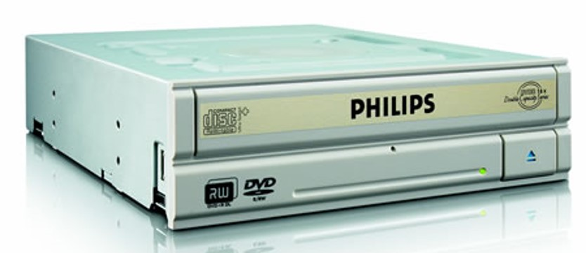
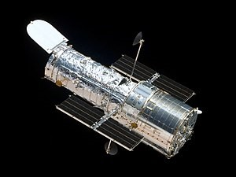

- Filmes/desenhos/séries:
- 1982: estreia nos cinemas o filme "E.T, o Extra Terrestre".
- Músicas de sucesso:
- 1986: Ira! - Flores em você
- Acontecimentos diversos:
- 1986: criado no Brasil o Plano Cruzado (plano econômico do governo Sarney
que visava reduzir a inflação com tabelamento de preços).